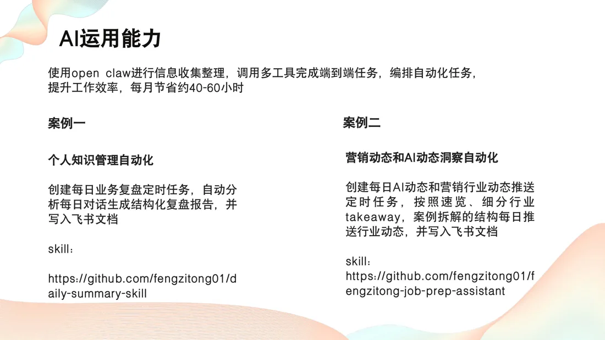
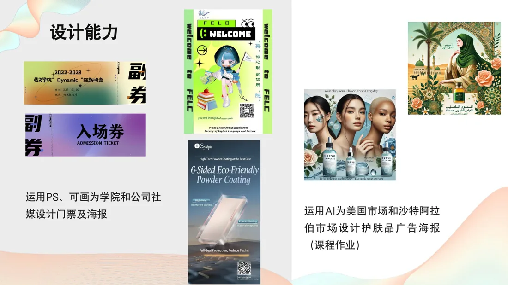
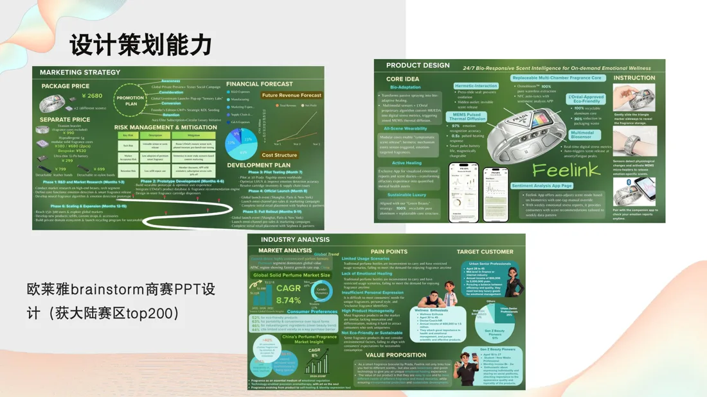
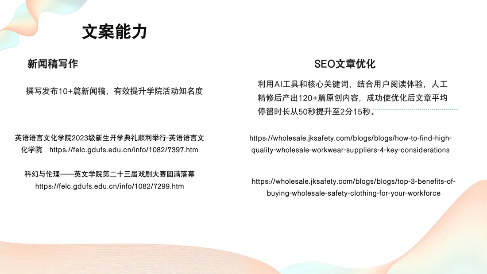
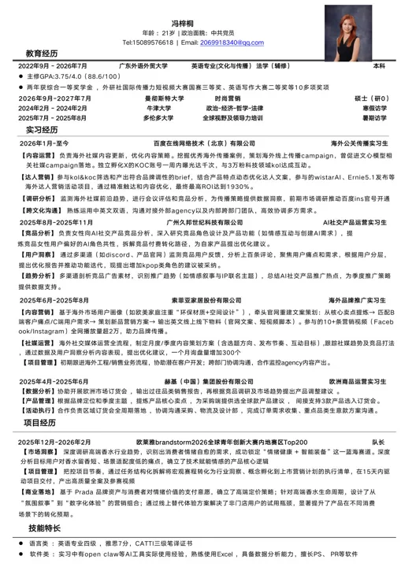

AI Automation
GitHub 作为 AI Workflow 作品集
把 GitHub 当作持续更新的项目主页：记录 AI 小工具、自动化脚本、业务复盘流程和求职准备系统，展示从问题拆解到输出沉淀的完整过程。
Overseas Marketing / AI Content Operations
Content, AI and global marketing systems for a sharper overseas story.
曼彻斯特大学时尚营销硕士预录取，本科英语专业背景。曾参与百度、索菲亚、赫基集团等海外传播与内容运营工作，也把 AI 自动化用于行业洞察、复盘报告和知识管理。

Selected Work

AI Automation
把 GitHub 当作持续更新的项目主页：记录 AI 小工具、自动化脚本、业务复盘流程和求职准备系统，展示从问题拆解到输出沉淀的完整过程。

Strategy / Deck Design
担任队长，推进高端香水赛道洞察、产品逻辑、商业落地与参赛材料，获中国大陆赛区 Top 200。
Visual Design
运用 Photoshop、可画和 AI 工具制作门票、海报，并完成美国与沙特市场护肤品广告海报课程作业。

Copywriting / SEO
撰写 10+ 篇学院新闻稿；产出 120+ 篇原创内容，平均停留时长从 50 秒提升至 2 分 15 秒。
Video Editing
参与团队工作室与索菲亚海内外社媒视频内容，每条视频浏览量均过千。
Experience
以海外传播、内容增长、用户洞察和跨团队协作为主线，把策略、内容和执行落在真实业务里。
负责海外社媒内容更新、KOL/KOC brief、竞品与媒介趋势监测；参与 WistaraAI、Ernie 5.1 等海外达人营销项目，最高 ROI 达 1930%。
分析女性向 AI 社交产品竞品、角色设计、用户反馈和广告素材，拆解付费转化路径并输出功能迭代建议。
面向海外市场进行官网重建文案策划、英文物料输出、10+ 条营销视频支持与社媒运营，一个月询盘量增加 300 个。
支持欧洲市场订货会、竞品调研、销售报告、产品卖点提炼和区域订货会落地协同。
Education
继续聚焦国际消费市场、品牌叙事、时尚营销和跨文化传播。
GPA 3.75/4.0，获得两年综合一等奖学金及多项英语写作、短视频、国际传播类奖项。
政治、经济、哲学、法律与全球视野及领导力培训，为跨文化商业判断补充国际化语境。
Capabilities
社媒内容策划、官网文案、新闻稿、英文物料、跨文化沟通、KOL/KOC brief。
Open Claw 自动化、多工具任务编排、飞书文档写入、竞品分析、用户洞察、Excel 数据处理。
Photoshop、可画、PR、剪映；能完成海报、门票、短视频脚本、拍摄参与与剪辑发布。
英语专四、雅思 7、CATTI 三级笔译证书；适合中英双语与海外市场内容工作。

Contact
{kind=link}
{kind=link}
{kind=link}